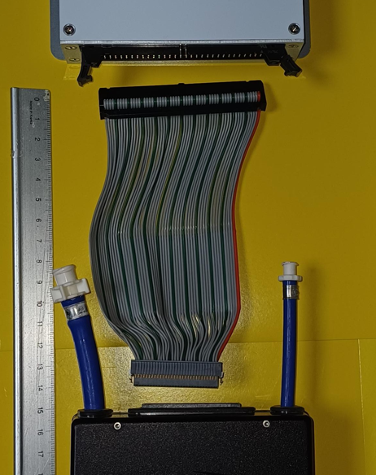
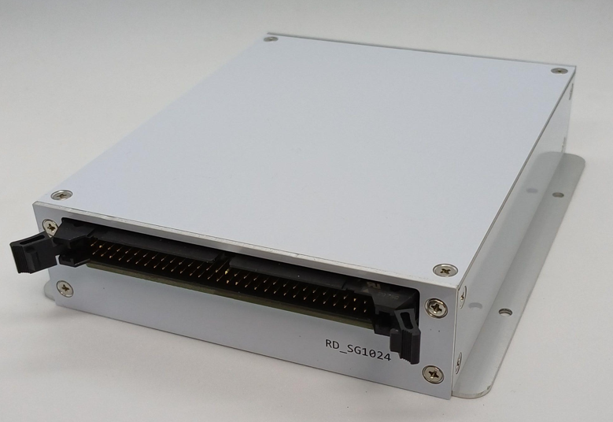
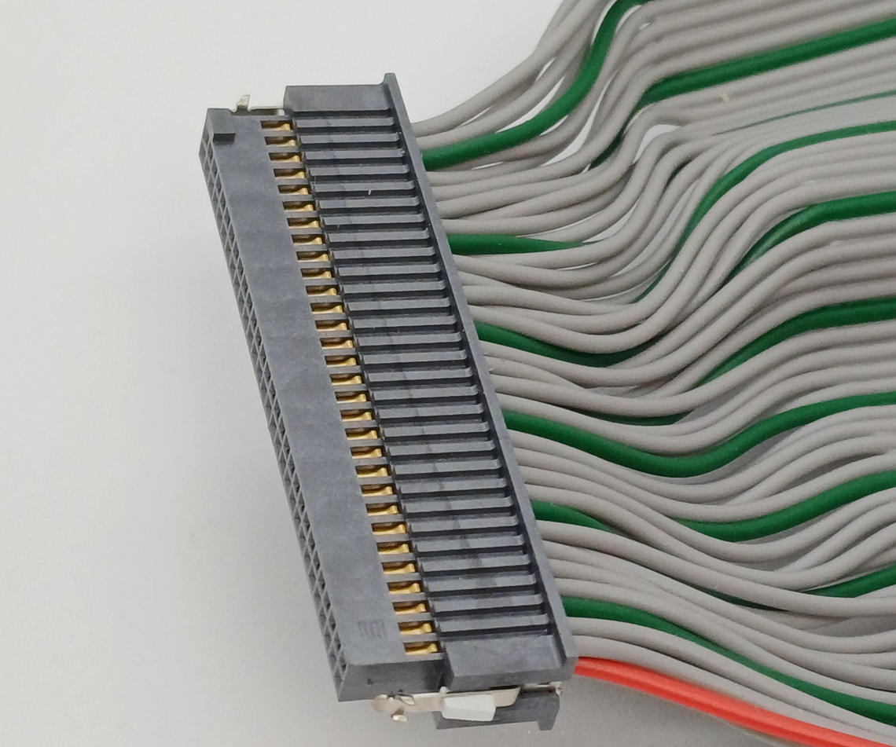
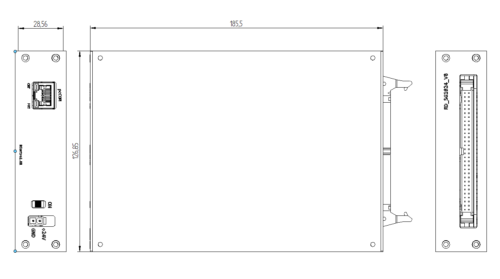

● The RD1024 provides analog waveform control for precise ink droplet generation.
● Upto 8 waveforms independently programmable for each row
● Head temperature control.
● The RD1024 is used with GData Controller.



